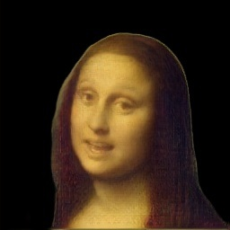

Neural Head Reenactment with Latent Pose Descriptors
CVPR 2020
|  |
|
|
|
Overview
- We propose a head reenactment system driven by latent pose descriptors (unlike other systems that use e.g. keypoints).
- It can predict foreground segmentation.
- Pose descriptors are person-agnostic and can be useful for third-party tasks (e.g. emotion recognition).
- Pose-identity disentanglement happens "automatically", without special losses.
Algorithm
- Dataset: VoxCeleb2 (~100K videos of ~6K celebrities).
- Training: randomly pick 9 frames from a video (8 identity sources and 1 pose source); learn to reconstruct the pose source.
- Impose bottlenecks: pose embedding and identity embedding.
- Use Graphonomy to obtain "ground truth" background masks.
- Inference (puppeteering): take ≥1 images of the target person, fine-tune the generator on them.
Pose-Identity Disentanglement
Intuitively, nothing prevents our system from encoding person-specific information into the pose embedding.
Apparently, this doesn't happen with 3 simple techniques enabled:
- Pose encoder's capacity is lower than that of the identity encoder (in our case, MobileNetV2 vs ResNeXt-50).
- Pose augmentations (transformations that preserve person's identity in an image) are applied to pose source.
- Foreground mask is predicted, and reconstruction losses are applied computed with background blacked out.
 |
||||||
| Identity source | Pose source | Ours | No pose augm. | No segmentation | Heavier pose enc. | Heavier pose enc., no pose augm. |
More Results
|
Identity source |
|||||||
|
Identity source |
|||||||
 |